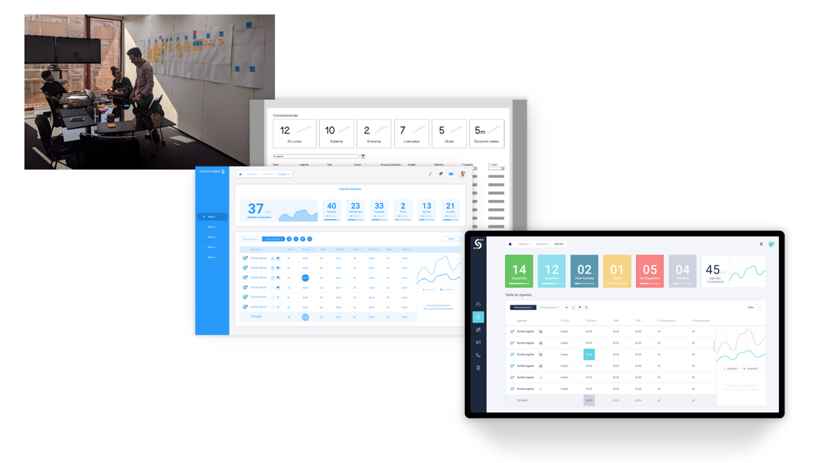

SmartContact
SmartContact is a comprehensive ecosystem that allows companies managing and monitoring their telephonic, SMS and chat/chatbot communications.
The big challenge in this project was to create an unified platform which integrates multitude of different isolated products, which however had interrelated functionalities.
The goal then was to offer a product easy to use and fast to set up for our light clients that just needed to satisfy certain communication aspect while offering the full potential in terms of very fine tuning of advance feature and settings for our heavy clients which required a fully comprehensive communication management and monitoring platform.
Most of these products were originally created by several teams or by acquiring other companies. That why, despite having similarities since a business perspective, all of them had different interaction, tasks flows, sometimes even opposite logic and of course a completely heterogeneous user interfaces. All this generated conflicts in the user's mental model making the whole experience negative.
Another constrain was the business need to keep improving the products to follow the market pace. Customers and users that were already using our products needed these improvement in terms of usability, user experience and business required functionalities.
However, to overcome customer and users current understanding of existing interface elements and interaction, avoid confusion and ease the learning curve for the future unified platform we took advantage of this situation to incrementally introduce some of these new changes.

There was big number of stakeholders involved. From accounting, several development and sales teams, a hierarchy of resellers and direct clients to the customer service team and of course the final users. I found in the interviews that balance and satisfy all their needs and interests into what SmartContact should satisfy was extremely complex.
The stakeholders eventually accepted some tradeoffs. This allow to decrease, to a certain extend, the complexity and scope and was achieved by removing features not very common to the majority of customers. With these decisions, in exchange, we facilitated a better design, more coherent and natural.
Our personas not only had different needs and interests but also were in contradiction sometimes. After all, not everyone would use the entire new platform capabilities in full. For example there was clients that just needed to have a few agents to manually call their customers and other resellers that needed to have track of several clients in turn with need of thousand of agents actively carrying out marketing campaigns while providing costumer support services all of this trough several communication channels. This force us to iterate a lot until we reach the conclusion that a module-based platform with big ability for customization was the best solution.
